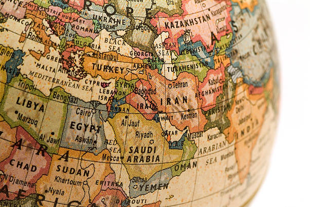

About Me
My Story:
Welcome!! I appreciate you stopping by!! My name is Marwa Abdulqader and I’m 19 years old. I was born in Baghdad, Iraq and was raised in Damascus, Syria and now I’m residing in Arizona, United States. I moved from Iraq to Syria due to the war in Iraq and the downfall of president Saddam Hussein in 2005. Then, I moved from Syria to the United State in 2013 due to civil war emerging in Syria. I’ll start with the name of this site because it can be confusing. A coincidence traveler is someone who traveled and moved to many countries but without the intention of tourism. I’m a coincidence traveler because I have traveled and moved to many countries due to the wars in the Middle East and not for the intention of tourism. I appreciate having the opportunity to travel and explore different cultures, meeting new people, and learning different languages.
How did I get started?

I started when I was in Syria during (2005-2013). In Syria, I have moved to multiple regions and cities due to constant war zones and expansion. However, for that reason I was able to see, explore, meet beautiful and exceptional places and people. In Syria, I have lived in the rural areas near orchards, fields full of fruits, green plains, mountains, and water springs. For me, the most important element was the Syrian people who were loving, cheerful, satisfied and full of activity and energy.
In 2009, I have traveled to Jordan and had the opportunity to visit rich historical places. Jordan was rich in it culture, people, and history. Jordanian people love their land and their country as it is a part of them. They are the most generous, hospitable, helpful, life-loving and laughing people. Traces of their history and civilizations can be sensed and seen in their homes, streets, landmarks, and cities.
In 2011, I traveled to Turkey from Syria. Turkey is famous and know for it incredible wonders castle, mosques, bazzars, geographical locations, and tasty food. Turkey is a unique mixture of it kind between the Middle East and Europe. It is a different and unique mixture that brings together two cultures and make every person regardless of their culture and background feel a sense of belonging.
Where I have been?

My travel journey consists of seven countries; however, I will only be including my favorite three in this site. I have been to Iraq, Syria, Lebanon, Jordan, Dubai, Turkey, and Mexico. From the list, my favorites are Syria, Jordan, and Turkey. In this site, I will walk you and share multiple concepts about Syria, Jordan, and Turkey. I will share with you concepts about culture/traditions, history, places to visits, food, currency, tips and resources. Friendly and enthusiastic restaurant worker with prior experience and specialization in High quality and Fast Food Restaurants. Represent establishment with friendly, professional demeanor at all times. Loves to work with guests, catering to their every need, guaranteeing satisfaction.